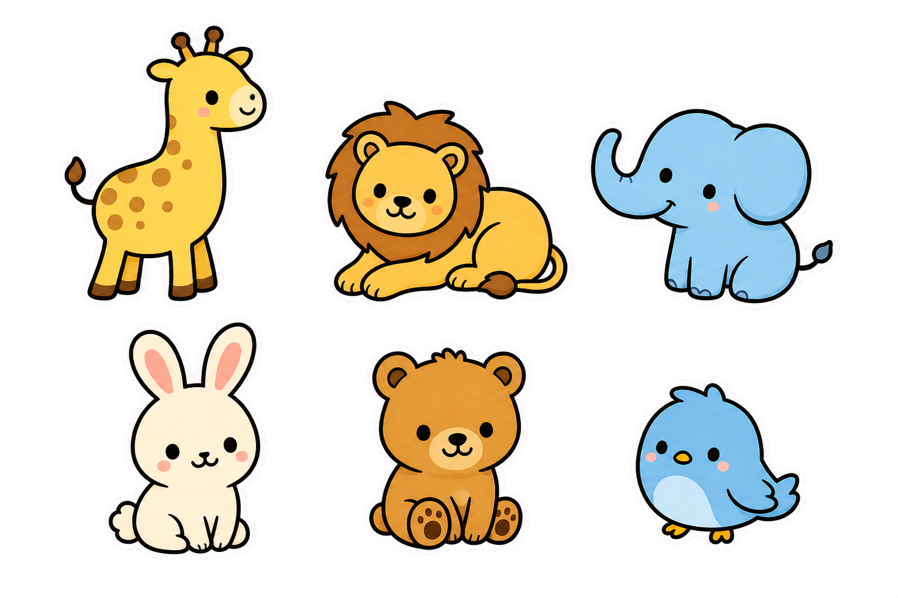

Квалификация проверенаПонятные профили специалистов
Цифровая поддержка семьи · Қазақстан
Один план.
Один план.
Одна команда.
Каждый шаг важен.
Найдите подходящего специалиста, получите индивидуальный план и отслеживайте важные шаги в развитии ребёнка.
✓ Проверенные специалисты
✓ RU / KZ
✓ Данные под контролем семьи

7 днейсерия занятий
+18%динамика навыка
Единый планЦели, задания и комментарии
Понятная динамикаБез сравнений с другими детьми
Сөйле рядомПросьбы, эмоции и потребности
Путь поддержки
Всё важное — в одном месте
Пять простых шагов помогают семье и специалисту двигаться в одном направлении.
К кому обратиться
Найдите своего специалиста
01 · План развития
Қадам
Индивидуальные цели, домашние задания и спокойная, понятная динамика навыков.
Цель неделиПопросить воду
72% · заметный прогресс
02 · Голос ребёнка
Сөйле
Большие яркие карточки помогают выражать просьбы, эмоции и потребности.
Яхочупить
Ответы специалистов
Полезно, спокойно, по делу
Частые вопросы
Вы не обязаны знать всё сразу
Мы собрали короткие ответы на вопросы, с которых часто начинается путь семьи.
🦒
Демо-истории
Когда команда рядом
Каталог специалистов
Поддержка, которая подходит вашей семье
Все профили и отзывы на этой странице — демонстрационные.
Кабинет родителя
Добрый день, мама Айару!
Сегодня достаточно одного маленького шага.
Сегодня
План Айару
Как ребёнок чувствует себя сегодня?
Выбор сохранится только на этом устройстве.Активные цели
Комментарий специалиста
«Айару всё чаще выбирает карточку без подсказки. На этой неделе дайте ей немного больше времени на самостоятельный выбор».
ДНДана НурлановаДемо-логопед · вчера
Кабинет специалиста
Добрый день, Дана!
У вас 2 встречи и 3 отметки родителей на проверку.
Сопровождение
Дети и активные планы
Сегодня
Последние сообщения
Быстрые действия
Обновить план Айару
Демо-панель администратора
● Все системы доступныПлатформа работает спокойно
Обзор заявок, профилей и образовательных материалов.
Новые заявки
Проверка специалистов
Қадам · индивидуальный планДемо-пример: план и прогресс вымышлены.
Маленькие шаги складываются в навык
Айару · период 8 июля — 4 августа · специалист Дана Нурланова
72%заданий выполнено
Цели развития
Фокус этого месяца
Задания специалиста
3 активныхПрактика дома
Динамика
↗ +12%Неделя в шагах
Самостоятельно 42% С подсказкой 38% С помощью 20%
Лента изменений
Команда рядом
Жираф помогает попросить
Основные просьбы
Библиотека поддержки
Понятные материалы для семьи
Без пугающих формулировок, диагнозов по описанию и опасных медицинских советов.
Aa
читать спокойно
читать спокойно
О платформеРядом с семьёй.
Рядом с семьёй.
В одной команде.
BalaQoldau помогает хранить план, задания и наблюдения в одном понятном пространстве — без постановки диагнозов и обещаний результата.
Семья управляет доступом
Информация ребёнка видна только подключённым специалистам.
Рекомендации создаёт человек
План составляет квалифицированный специалист, а не алгоритм.
Поддержка без ярлыков
Мы говорим о целях и навыках, не сравнивая ребёнка с другими.
Важно
Демонстрационная версия
Не вводите настоящие медицинские данные. Прототип работает локально, не отправляет формы во внешние сервисы и не подключает аналитику. Платформа не ставит диагноз, не назначает лечение и не заменяет врача.